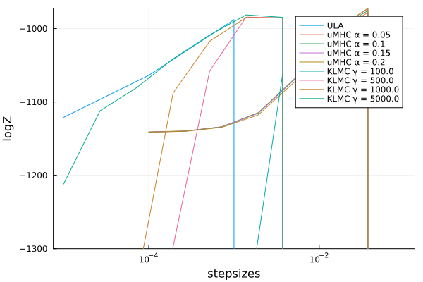
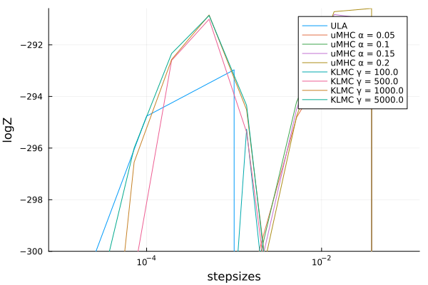

Stan Models
using ControlledSMC
using Distributions
using FillArrays
using LinearAlgebra
using LogDensityProblems, StanLogDensityProblems
using Plots, StatsPlots
using PosteriorDB
using ProgressMeter
using Random, Random123
function experiment_smcuhmc(rng, path, d, n_particles, n_reps, ylims)
stepsizes = 10.0.^range(-4, -1; length=8)
dampings = [0.05, 0.1, 0.15, 0.2]
for α in dampings
ℓZs = @showprogress map(stepsizes) do ϵ
sampler = SMCUHMC(ϵ, α, Eye(d))
mean(1:n_reps) do k
try
rng_local = deepcopy(rng)
set_counter!(rng_local, k)
_, _, _, stats = ControlledSMC.sample(
rng_local, sampler, path, n_particles, 0.5; show_progress=false
)
last(stats).log_normalizer
catch e
if occursin("log_density", e.msg)
-10^10
else
throw(e)
end
end
end
end
Plots.plot!(
stepsizes, ℓZs;
label="uMHC α = $(α)",
xscale=:log10,
ylims,
xlabel="stepsizes",
ylabel="logZ",
) |> display
end
end
function experiment_smcklmc(rng, path, d, n_particles, n_reps, ylims)
stepsizes = 10.0.^range(-5, -2; length=8)
dampings = [100., 500., 1000., 5000]
for γ in dampings
ℓZs = @showprogress map(stepsizes) do h
sampler = SMCKLMC(γ*h, γ)
mean(1:n_reps) do k
try
rng_local = deepcopy(rng)
set_counter!(rng_local, k)
_, _, _, stats = ControlledSMC.sample(
rng_local, sampler, path, n_particles, 0.5; show_progress=false
)
last(stats).log_normalizer
catch e
if occursin("log_density", e.msg)
-10^10
else
throw(e)
end
end
end
end
Plots.plot!(
stepsizes, ℓZs;
label="KLMC γ = $(γ)",
xscale=:log10,
ylims,
xlabel="stepsizes",
ylabel="logZ",
) |> display
end
end
function experiment_smcula(rng, path, d, n_particles, n_reps, ylims)
ula_stepsizes = 10.0.^range(-5, -2; length=4)
ℓZs = @showprogress map(ula_stepsizes) do h
sampler = SMCULA(h, h, TimeCorrectForwardKernel(), Eye(d), path)
mean(1:n_reps) do k
try
rng_local = deepcopy(rng)
set_counter!(rng_local, k)
_, _, _, stats = ControlledSMC.sample(
rng_local, sampler, path, n_particles, 0.5; show_progress=false
)
last(stats).log_normalizer
catch e
if occursin("log_density", e.msg)
-10^10
else
throw(e)
end
end
end
end
Plots.plot!(
ula_stepsizes, ℓZs;
label="ULA",
xscale=:log10,
ylims,
xlabel="ULA",
ylabel="logZ",
) |> display
end
function run_stanmodel(name, ylims)
pdb = PosteriorDB.database()
post = PosteriorDB.posterior(pdb, name)
prob = StanProblem(post, ".stan/"; force=true)
d = LogDensityProblems.dimension(prob)
seed = (0x38bef07cf9cc549d, 0x49e2430080b3f797)
rng = Philox4x(UInt64, seed, 8)
n_reps = 8
n_iters = 32
proposal = MvNormal(Zeros(d), I)
schedule = range(0, 1; length=n_iters) .^ 4
path = GeometricAnnealingPath(schedule, proposal, prob)
n_particles = 256
Plots.plot() |> display
experiment_smcula( rng, path, d, n_particles, n_reps, ylims)
experiment_smcuhmc(rng, path, d, n_particles, n_reps, ylims)
experiment_smcklmc(rng, path, d, n_particles, n_reps, ylims)
end
if !isdir(".stan")
mkdir(".stan")
end".stan"run_stanmodel("radon_mn-radon_hierarchical_intercept_noncentered", (-23000, Inf))
Plots.savefig("vanilla_smc_radon.svg")"/home/runner/work/ControlledSMC.jl/ControlledSMC.jl/docs/build/vanilla_smc_radon.svg"
run_stanmodel("dogs-dogs", (-300, Inf))
Plots.savefig("vanilla_smc_dogs-dogs.svg")"/home/runner/work/ControlledSMC.jl/ControlledSMC.jl/docs/build/vanilla_smc_dogs-dogs.svg"